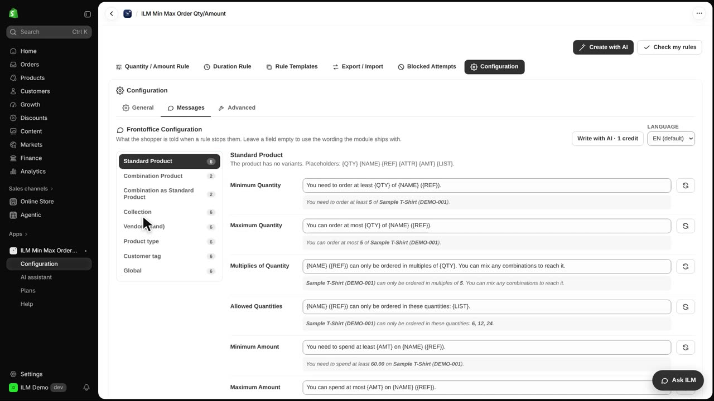
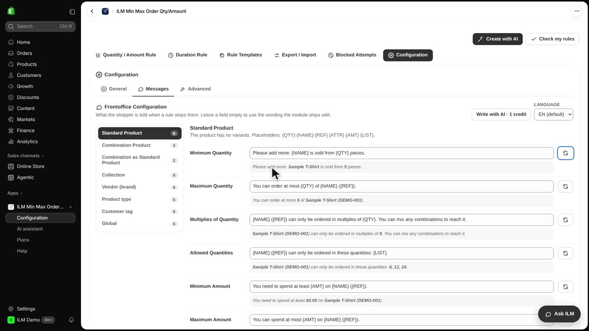
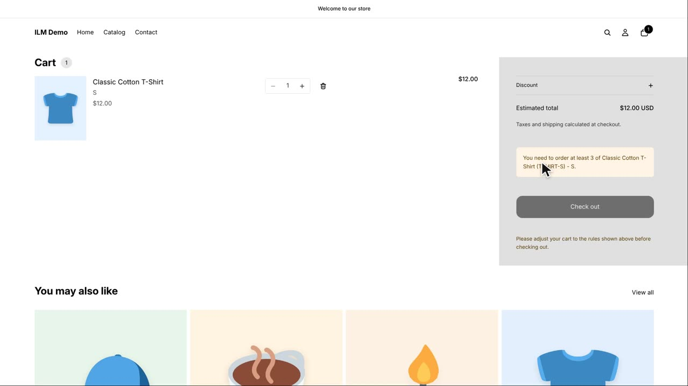

Every message a shopper sees when a rule stops them can be changed, so your store never has to sound like a robot. Instead of a generic warning, you can explain the minimum in your own friendly words. In this lesson you rewrite the minimum quantity message for the Classic Cotton T-Shirt, which has a minimum of three. You will see the new wording in the cart, then learn how to restore the original.
Here is the message as it stands now. The cart holds one Classic Cotton T-Shirt, but the rule needs three, so the shopper sees the default minimum quantity notice.
In the admin, open Configuration and then the Messages page. The messages are grouped by the kind of product and by the rule, so you can find the right one quickly. The left side lists the message groups, and the Minimum Quantity message sits under Standard Product.

Under Standard Product, change the Minimum Quantity message to your own sentence. The placeholders in curly brackets, like QTY and NAME, are filled in by the app with the real quantity and product name. The preview below the field shows exactly how the finished message will read, so you can check it before saving.

Back in the cart, the shopper now sees your new wording instead of the default. The message still explains that the Classic Cotton T-Shirt needs three pieces, but in your own voice.

The round arrow next to a message brings back the wording the app ships with, so you can undo a change at any time. On the Basic plan, you can pick another language at the top of the page, or let AI translate every message for you.